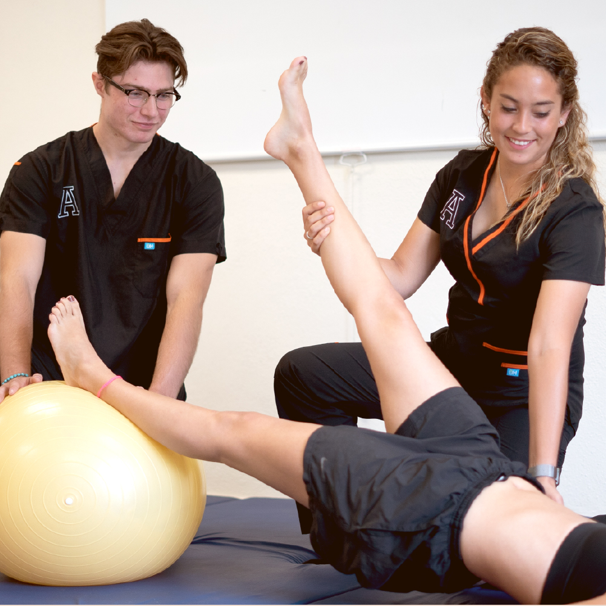

Terapia Física

Terapia Física a Domicilio
ofrecemos terapia física a domicilio para ayudarte a recuperar tu movilidad y mejorar tu bienestar físico en la comodidad de tu hogar. Nuestros servicios de terapia física están diseñados para ofrecerte un tratamiento personalizado y efectivo, adaptado a tus necesidades individuales.
¿Qué Ofrecemos?
- Evaluación Integral: Comenzamos con una evaluación detallada para entender tus necesidades específicas y desarrollar un plan de tratamiento que se ajuste a tus objetivos de recuperación.
- Rehabilitación y Ejercicios: Proporcionamos ejercicios terapéuticos y técnicas de rehabilitación para mejorar tu fuerza, flexibilidad y movilidad. Nuestros profesionales te guiarán en cada paso para asegurar una recuperación óptima.
- Manejo del Dolor: Utilizamos métodos avanzados para el manejo del dolor, incluyendo técnicas de terapia manual, estiramientos y otras modalidades que ayudan a aliviar molestias y acelerar tu recuperación.
- Educación y Prevención: Te educamos sobre cómo prevenir futuras lesiones y mejorar tu salud física general, ofreciéndote consejos y ejercicios para mantenerte activo y en forma.
- Comodidad y Privacidad: Disfruta de tu sesión de terapia física en la comodidad y privacidad de tu hogar. Nuestro objetivo es proporcionarte un tratamiento efectivo sin que tengas que desplazarte a una clínica.
Ya sea que necesites rehabilitación después de una lesión, tratamiento para una condición crónica o simplemente quieras mejorar tu salud física, nuestro equipo de terapeutas físicos está preparado para ayudarte.
Contáctanos para más información o para programar tu sesión de terapia física a domicilio.